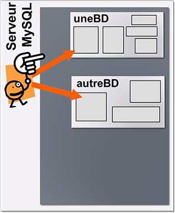
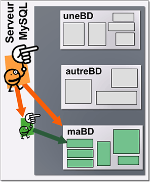
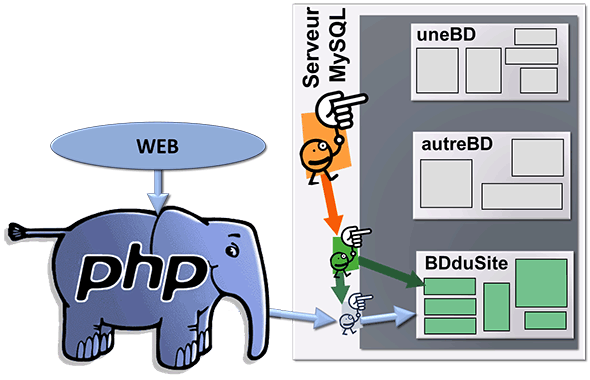

MySQL est un serveur de base de données SQL (Structured Query
Language). Il s'agit d'une application client-serveur.
Le
serveur héberge plusieurs bases de données, gére les accès et les
requêtes des clients.
Les clients envoient des demandes sous
forme de requêtes SQL et reçoivent en retour les données stockées sur
le serveur.
Dans notre cas, les clients sont les scripts PHP qui avec des fonctions dédiées vont établir un dialogue et communiquer avec le serveur MySQL.
On travaille dans un environnement 3 tiers, avec en pivot le serveur Web qui a en quelque sorte un double rôle de serveur ET de client :
- le serveur Web est le serveur du client navigateur (l'utilisateur humain)
- le serveur Web est le client du serveur de bases de données.
Le fait qu'il y ait 2 serveurs (1 serveur Web et 1 serveur de bases de données) n'implique pas que l'on doive utiliser 2 ordinateurs. Les 2 logiciels serveur (Apache ou IIS et MySQL) peuvent très bien cohabiter sur le même ordinateur car ils n'utilisent pas les mêmes numéros de port : le serveur Web utilise les ports 80 (HTTP) et/ou 443 (HTTPS), et le serveur MySQL utilise par défaut le port 3306.
Vous trouverez la description des principales caractéristiques techniques de MySQL sur https://dev.mysql.com/doc/refman/5.7/en/introduction.html et dans cet article de wikipedia.
Les utilisateurs du serveur MySQL
On considère que le langage SQL permet de faire 2 sortes de requêtes sur une base de données :
- des requêtes de définition de données (CREATE DATABASE, CREATE TABLE, CREATE INDEX, GRANT, ALTER TABLE, DROP TABLE, etc)
- des requêtes de manipulation de données (SELECT, INSERT, UPDATE, DELETE).
Pour des raisons évidentes de sécurité il est totalement exclu qu'un script PHP déclenchable depuis Internet par une personne lambda puisse effectuer des requêtes de définition de données sur la base de données de l'application, et encore moins sur les autres bases de données hébergées par le serveur MySQL.
| 
1 Un serveur MySQL est administré par un utilisateur privilégié ("root") qui a tous les droits sur toutes les bases et tous les autres utilisateurs du serveur. |

2 L'utilisateur privilégié ("root") va créer la base de données de l'application et un utilisateur gestionnaire de cette base de données. Cet utilisateur gestionnaire aura tous les droits sur la base de l'application. |
| 
3 L'utilisateur gestionnaire de la base de l'application va créer la structure interne de la base (tables, index). Il va créer aussi un utilisateur "Web" qui aura des droits réduits (SELECT, INSERT, UPDATE, DELETE) sur la base (voir sur certaines tables uniquement). C'est cet utilisateur qui sera employé pour faire toutes les requêtes de l'application depuis PHP. |
|
Principales requêtes utilisées
La manipulation des données à l'intérieur des tables (sélection, suppression, mise à jour...) sont effectuées avec les requêtes suivantes : SELECT, INSERT, UPDATE et DELETE
Pour une liste exhaustive des différentes clauses possibles, voir la documentation officielle.
SELECT : sélectionne et extrait des enregistrements contenus
dans les tables suivant certaines conditions. C'est la requête la
plus souvent employée.
Vous devez utiliser au maximum les possibilités
du langage SQL, et notamment les jointures, pour limiter le nombre de
requêtes envoyées au serveur MySQL : une seule requête (même un peu longue) sera toujours traitée plus rapidement
que plusieurs petites requêtes. En particulier, il faut essayer d'éviter d'envoyer des requêtes
à l'intérieur d'une boucle.
SELECT liste_colonnes
[FROM liste_tables]
[WHERE expression_where]
[GROUP BY liste_colonnes]
[HAVING expression_where]
[ORDER BY {num_colonne | liste_colonnes | formule}
[ASC | DESC] , ...]
[LIMIT [offset, ] nombre]
- liste_colonnes définit les colonnes à extraire, séparés par des virgules. * désigne toutes les colonnes des tables spécifiées dans la clause FROM.
- FROM : définit la ou les tables (liste_tables) dans lequelles seront sélectionnées les données.
- WHERE : définit une restriction dans les données sélectionnées et / ou une jointure sur les tables.
- GROUP BY : regroupe les résultats dans l'ordre des colonnes spécifiées par liste_colonnes.
- HAVING : définit une restriction secondaire sur les lignes satisfaisant aux conditions de la clause WHERE.
- ORDER BY : définit la méthode de tri du résultat. ASC (défaut) définit un ordre croissant, DESC un ordre décroissant.
- LIMIT : sert à sélectionner un intervalle de lignes dans le résultat. LIMIT n renverra les n premières lignes correspondantes. LIMIT m, n retourne n lignes en commençant par l'enregistrement numéro m. Les lignes sont numérotées à partir de 0.
INSERT : insère des lignes dans la table nom_table
INSERT [INTO] nom_table [(liste_colonnes)] VALUES (expression [, expression] ...)
INSERT [INTO] nom_table SET nom_colonne=expression [, nom_colonne=expression]
INSERT [INTO] nom_table [(liste_colonnes)] SELECT...
UPDATE modifie le contenu des champs des enregistrements de la table nom_table. Les enregistrements modifiés sont définis par la clause WHERE.
UPDATE nom_table SET nom_colonne=expression [, nom_colonne=expression ] ... [WHERE expression_where] [LIMIT n]
- Les colonnes désignées dans la clause SET sont mise à jour avec la valeur indiquée. Si aucune clause WHERE n'est spécifiée, tous les enregistrements sont mis à jour.
- Si LIMIT est spécifié, seuls les n premiers enregistrements seront modifiés.
DELETE supprime les enregistrements de la table nom_table définis par la clause WHERE..
DELETE FROM nom_table [WHERE condition] [LIMIT n]
- Sans clause WHERE spécifique, toutes les données de la table sont supprimées.
- Si LIMIT est spécifié, seuls les n premiers enregistrements seront supprimés.
MySQL et PHP
Le code PHP est constitué d'un noyau qui peut être étendu avec des extensions optionnelles. Pour travailler avec des systèmes de bases données (MySql, Oracle, MS SQL, DB2, PostgreSQL, etc) PHP va donc utiliser des extensions, écrites spécifiquement pour dialoguer avec tel ou tel SGBD.
Pour MySQL il existe 2 extensions : mysql et mysqli. L'extension mysql est la plus ancienne et a été dépréciée dans les versions récentes de PHP. On lui préfère maintenant l'extension mysqli (i pour improve - améliorée).
L'extension mysqli a la particularité d'être déclinée en 2 versions (ie 2 interfaces):
- une version orientée objet qui va utiliser principalement 3 objets (1 objet pour la connexion et l'envoi de requête, 1 objet pour travailler avec des requêtes préparées et 1 objet pour le traitement des résultats d'un SELECT),
- une version orientée procédural avec laquelle tous les traitements sont fait par l'appel de fonctions.
Dans notre cas, nous travaillerons avec la version procédurale car l'étude de la programmation objet avec PHP sera vue plus loin dans ce tutoriel.
Base de données de test
Dans les pages suivantes nous allons utiliser une base de données sur laquelle porteront nos exemples. Cette base de données s'appelle php_tuto et elle est composée de 4 tables stockant des informations sur des livres, leurs auteurs et leurs éditeurs.
Ces livres ne constituent en aucune sorte des références que je vous conseille. Ils sont simplement là pour que nous ayons des données à traiter.
Cette base de données est ultra simpliste pour ne pas compliquer les requêtes que l'on va y faire, le but de ce tutoriel n'étant pas l'étude de SQL. Le schéma relationnel est le suivant :

Les noms des tables et des champs sont suffisamment parlant pour qu'ils se passent de commentaires.
Si vous travaillez sur votre ordinateur personnel il faut créer cette base de données pour que les tests et exemples soient réalisables.